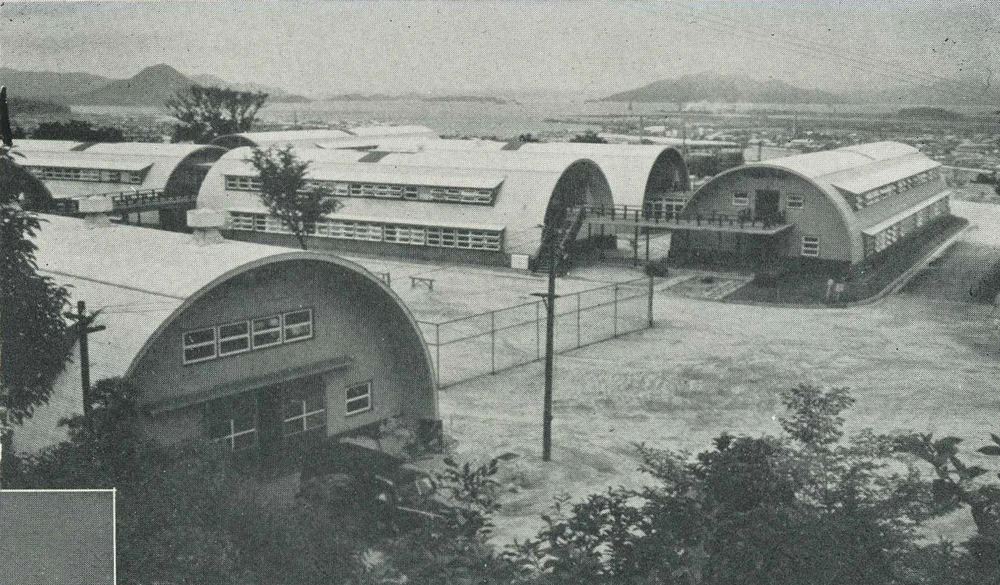
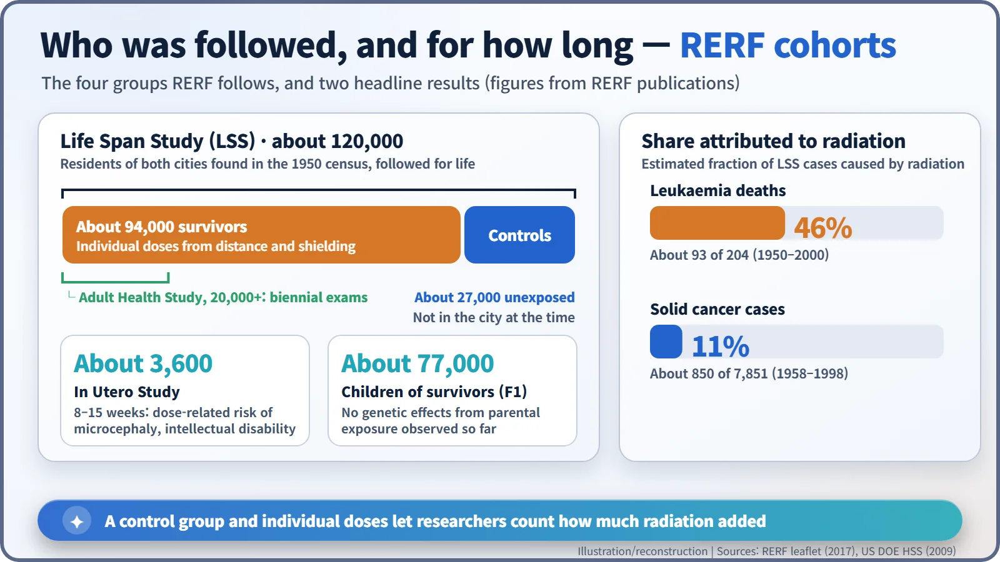
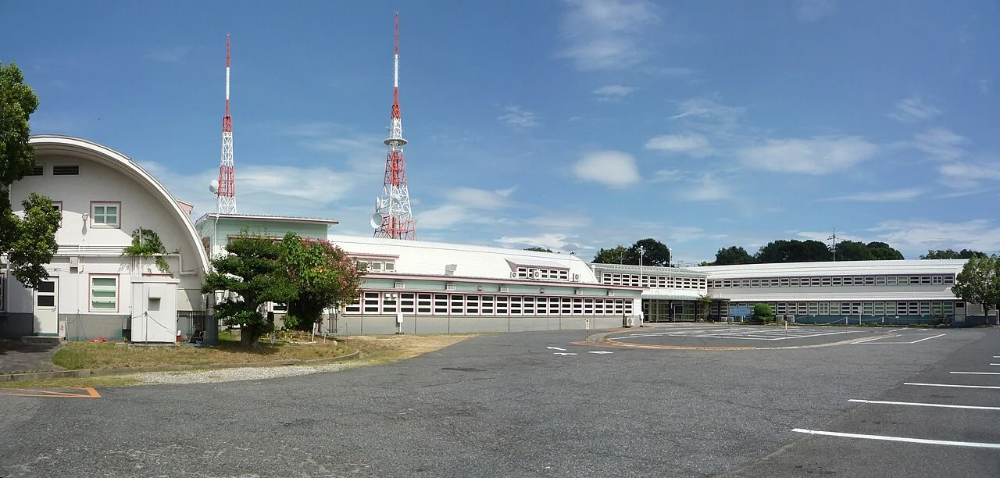
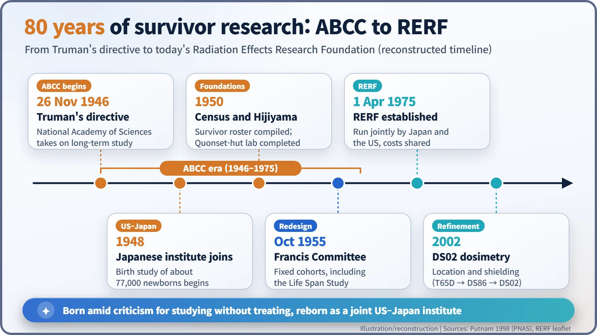

Nuclear History · 122
Eighty Years in a Hilltop Ledger — The ABCC, RERF and the Study of Atomic-Bomb Survivors
In Quonset huts on a Hiroshima hill, the health of the atomic-bomb survivors has been recorded for a lifetime, with a control group that turned stories into numbers.
On 26 November 1946 President Truman's directive launched the Atomic Bomb Casualty Commission (ABCC) to study the long-term health of the survivors of Hiroshima and Nagasaki. Criticised for examining survivors without treating them, it was replaced on 1 April 1975 by the joint Japanese–American Radiation Effects Research Foundation (RERF), whose Life Span Study of about 120,000 people became a primary basis for radiation protection standards worldwide.
Rounded roofs on a hill
On top of Hijiyama, a low hill in the middle of Hiroshima, stands a row of buildings with rounded roofs, like tin cans sliced in half lengthwise. They are Quonset huts, the prefabricated shape the US military used everywhere after the war. Since 1950, people working in them have kept one long record: the health of the people who survived the atomic bomb, followed for the rest of their lives. The hill is about 1.8 km from the hypocenter, the point directly below the explosion. [1] [3]

Data the world had never had
In August 1945 hundreds of thousands of people in two cities were exposed to radiation in an instant. People of every age and both sexes were exposed at once, and for each of them it was possible, in principle, to know how far they had been from the burst. Nothing like it had happened before. Learning what radiation does to the human body over a lifetime meant watching these people for a very long time.
Japanese doctors and scientists reached the cities within days. In September, teams from the US Army, the US Navy and the Manhattan Engineer District arrived, and on 12 October 1945, on General MacArthur's orders, the American and Japanese groups were merged into a Joint Commission. But that was a survey lasting months, not decades. [1]
26 November 1946: the long study begins
The long-term programme traces back to a directive from President Harry S. Truman dated 26 November 1946. It has been cited ever since as the mandate for the US National Academy of Sciences to run the Atomic Bomb Casualty Commission (ABCC). In early 1948 Japan's National Institute of Health formally joined, and the money came from the US Atomic Energy Commission. [1]
An early flagship was the birth study led by the geneticist James V. Neel (1915–2000). From 1948 to 1954 about 77,000 newborns in the two cities were examined to see whether their parents' exposure had left any mark. In 1950 the Quonset-hut laboratory on Hijiyama was completed, and the staff grew to 1,061. [1] [2]
"They examined us, but did not treat us"
One criticism has followed the ABCC ever since. It examined survivors and took blood samples, but it did not treat them. Among survivors grew the bitter feeling of being used as guinea pigs even though the war was over. The historian of science M. Susan Lindee, in Suffering Made Real (1994), argues that Cold War politics shaped this policy, together with a fear that offering treatment would look like atonement for the bomb. [4]
A 1998 retrospective by the biochemist Frank W. Putnam stresses a different side: how the programme survived chronic money trouble. In 1951 the American committee overseeing it even voted to close the ABCC "because of lack of financial support". Both assessments still stand side by side. Medical support for survivors became the job of the Japanese government; a 1957 law set up health check-ups and help with medical costs. [1]
Why a control group turns stories into numbers
The study took its lasting shape after a committee led by the American epidemiologist Thomas Francis Jr. visited Japan in October 1955. It recommended turning scattered surveys into fixed cohorts: the same people, followed for life. The heart of that design is the Life Span Study (LSS). [1]
The LSS follows about 120,000 residents of Hiroshima and Nagasaki identified through the 1950 national census. About 94,000 are survivors; about 27,000 were not in either city at the time and serve as the comparison group. Why does that matter? Because people get cancer without any radiation at all. Only by comparing survivors with similar people from the same cities can researchers see how much radiation added. A dosimetry system estimates each survivor's dose from where they were and what shielded them; the current version, DS02, dates from 2002. A sub-cohort, the Adult Health Study, has a medical examination every two years. [2]

What the ledger shows
According to RERF, of 204 leukaemia deaths in the LSS between 1950 and 2000, about 93 (46%) are attributed to radiation. For solid cancers such as stomach or lung cancer, about 850 of 7,851 cases diagnosed between 1958 and 1998 (about 11%) are attributed to radiation. Put the other way round, most cancers among survivors, as among everyone else, had other causes. Of about 3,600 people exposed in the womb, those exposed at 8–15 weeks of pregnancy showed a dose-related increase in microcephaly (an unusually small head) and intellectual disability. [2]
And the survivors' children? Studies of birth defects, chromosomes, blood proteins, deaths and cancers have so far found no genetic effect of the parents' exposure. RERF continues to follow them. [2] [3]
1975: a laboratory for two countries
After negotiations aimed at rebuilding trust, the ABCC was replaced on 1 April 1975 by the Radiation Effects Research Foundation (RERF), a foundation under Japanese law, run jointly by Japan and the United States. Its costs are shared between Japan's Ministry of Health, Labour and Welfare and the US Department of Energy. Its founding document sets the aim of contributing "to the maintenance of the health and welfare of atomic bomb survivors and to the enhancement of the health of all mankind." [1] [3]

The ledger's numbers became a primary scientific basis for the radiation risk estimates and dose limits set by bodies such as the International Commission on Radiological Protection (ICRP). In 2009, according to the US Department of Energy, about 40% of the people in the LSS were still alive. [2] [3]

Much of what we know today about radiation and health rests on decades of survivors who kept turning up for examinations. The criticism that the early research examined without treating is part of that record too.